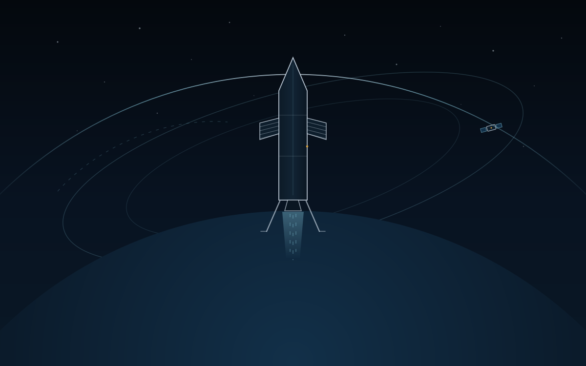

Atmospheric · multirotor
QuadX-Waypoints
Crazyflie-scale quadrotor capturing four waypoints inside a 5 m dome.
obs 37 act 4 40 Hz 800 steps / 20 s
Aerospace control · reinforcement learning
A lightweight reinforcement-learning benchmark built on batched device tensors: six atmospheric vehicles and four spacecraft missions, each paired with a classical GNC baseline that speaks the same action language.

01 / Tasks
Every environment exposes the same step / reset / buffer contract and the same batched tensor API. The replay clips are exported from the repository's visualization scripts and show task dynamics, not benchmark scores.
Atmospheric · multirotor
Crazyflie-scale quadrotor capturing four waypoints inside a 5 m dome.
obs 37 act 4 40 Hz 800 steps / 20 s
Atmospheric · tracking
Ground-target tracking with a geometric camera; success needs 85% visibility without a crash.
obs 25 act 4 40 Hz 1200 steps / 30 s
Atmospheric · fixed wing
2.35 kg UAV with blade-element aerodynamics, capturing four waypoints across a 20–65 m shell.
obs 39 act 4 30 Hz 3600 steps / 120 s
Atmospheric · hybrid VTOL
Four rotors, fixed-wing surfaces and a forward pusher, with a natural rotor-to-aero authority transition.
obs 47 act 8 40 Hz 1200 steps / 30 s
Atmospheric · propulsive landing
F9-class booster landing under grid-fin and gimbal control; benchmark v2 asks for two settled seconds on the pad.
obs 30 act 7 40 Hz 1200 steps / 30 s
Atmospheric · intercept
6-DOF tail-controlled missile intercepting a kinematic manoeuvring target with a proximity fuse.
obs 34 act 3 60 Hz 900 steps / 15 s
Spacecraft · CMG attitude
Attitude control with 4 or 6 control moment gyros and a singularity-aware allocator.
obs 26 / 32 act 4 / 6 40 Hz 1200 steps / 30 s
Spacecraft · low thrust
Perigee raising with 10 mN electric propulsion; 166 steps cover roughly five revolutions.
obs 8 act 3 300 s / step 166 steps
Spacecraft · final approach
CWH final approach from 60–120 m with fuel derating and a safety shield.
obs 6 act 3 1 s / step 500 steps / 8.3 min
Spacecraft · medium approach
CWH approach from 1000–1500 m while respecting a 5 m keep-out sphere.
obs 6 act 3 1 s / step 1000 steps / 16.7 min
Replays were rendered offline with the repository's visualization tools. The footage shows each task's dynamics and framing; it is not tied to any baseline score listed below.
Longer exports of three tasks, adding the live state card and a second camera. Same environments, different framing.
Waypoint sequence with the live state card and close-up camera.
Relative range, closing speed and docking-axis alignment.
Ignition, braking, touchdown and the two-second settle window.
02 / Design
Physics, contacts, rewards, resets and RNG are masked tensor kernels on a single device. Inactive replicas are frozen, consume no random numbers, and never enter a per-replica Python loop.
01
No engine round-trip per replica and no Gym wrapper. Each step() performs exactly one host sync, used only for episode-boundary bookkeeping.
02
SE(3), L1 + TECS, PDG, CWH-LQR and two-impulse guidance emit the same action vector as the policy, so they can be evaluated, cloned, or used as a residual base.
03
experiments/controller_priors ships behavior-cloning warm starts, residual RL and gain scheduling, including DAgger collection and checkpoint selection.
03 / Baselines
Each task ships one default classical controller, evaluated on the same environment, reward and success criterion as the learned policy. Replica counts, seeds and windows come from the recorded results/<task>/baseline.json artifacts.
| Task | Classical baseline | Success | Evaluation window & notes |
|---|---|---|---|
| QuadX-Waypoints | SE(3) geometric control + integral trim | 90.6% | 32 replicas, seed 7 · cascade PID arm 99.2% |
| QuadX-Track | CV Kalman filter + fixed-offset SE(3) | 82.8% | 128 replicas, seed 21 · visible-time fraction 90.2% |
| Fixedwing-Waypoints | L1 lateral + TECS longitudinal autopilot | 97.0% | 128 replicas, seed 13 · window ends before the 120 s limit |
| Quadplane-VTOL | SE(3) + forward pusher | 89.1% | 128 replicas, seed 13 |
| Rocket-Landing | ZEM/PN PDG + virtual pad + pulse servo | 100% | v2 criterion · 40 Hz · settled for 2 s |
| Missile-Intercept | Augmented PN (N = 15) → body-rate commands | 71.1% | 128 replicas, seed 13 |
| Satellite Attitude | Quaternion PD + Schaub–Junkins damped pseudo-inverse | 100% | 128 replicas, seed 13 |
| Low-Thrust Transfer | Gauss one-step greedy tangential guidance | 100% | 128 replicas, seed 13 · terminal return 0.0067 |
| Space Docking | CWH discrete LQR + shield / fuel derating | 100% | 128 replicas, seed 13 · 263-step window |
| Space Rendezvous | Two-impulse CWH ZEM/PN, recursive re-solve | 100% | 128 replicas, seed 13 · 581-step window |
Scroll horizontally to see all columns →
Within one task, a higher rate is better. Across tasks these numbers are not a unified ranking: the environments, horizons and success criteria differ.
Version note. The rocket v1 instantaneous rates quoted in older notes (82.8% / 84.1%) are not comparable with the v2 settled criterion: 40 Hz and two continuous seconds of pad contact, low speed and low spin.
04 / Quick start
Training entries are self-contained: constants live in the file and there are no CLI arguments. Evaluation and baseline scripts restore the recorded configuration.
# clone & install
git clone https://github.com/PaoShou-China/aerospace-rl-benchmark
cd aerospace-rl-benchmark
pip install -r requirements.txt
# train: one self-contained entry per task
python environments/multirotor/train_quadx.py
python environments/vtol/train_quadplane.py
# evaluate a checkpoint, then the classical baseline
python scripts/eval.py quadx
python scripts/baseline_eval.py quadx